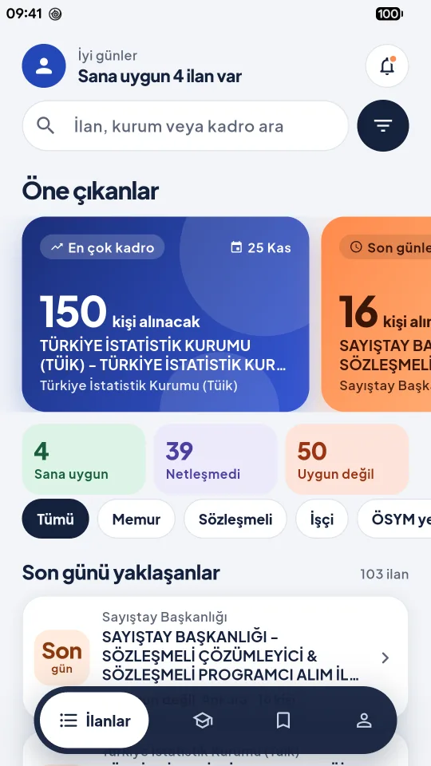
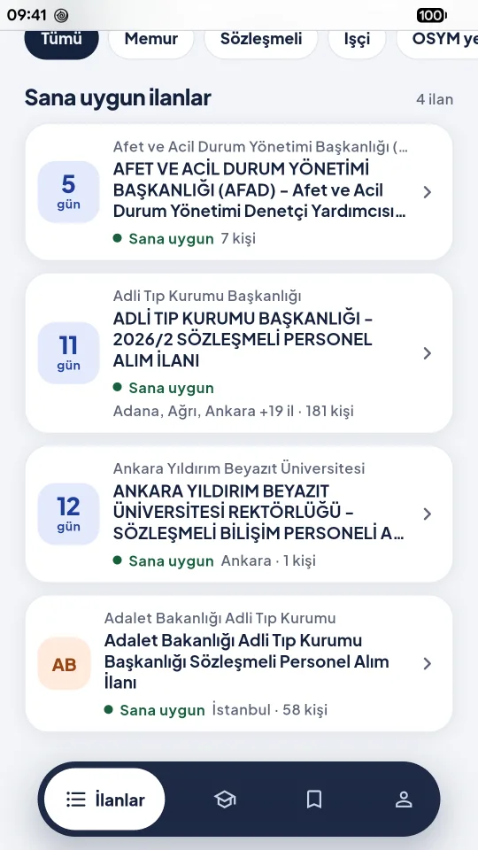
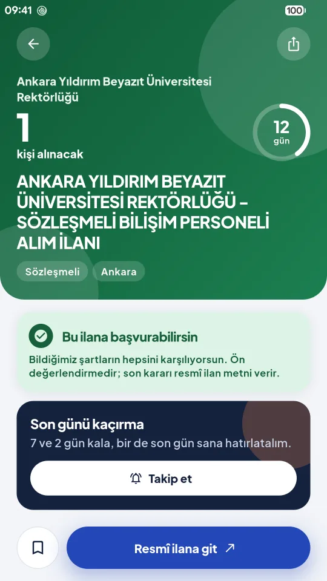
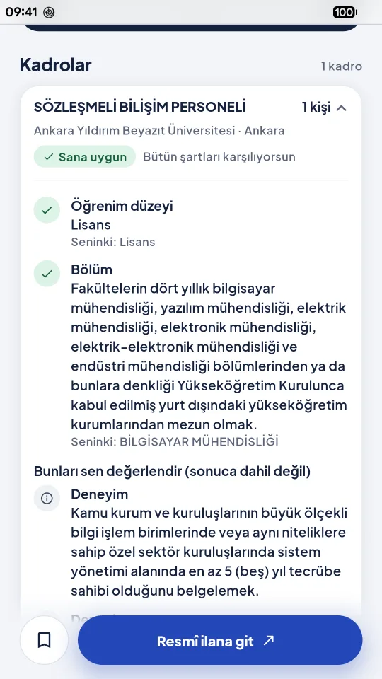
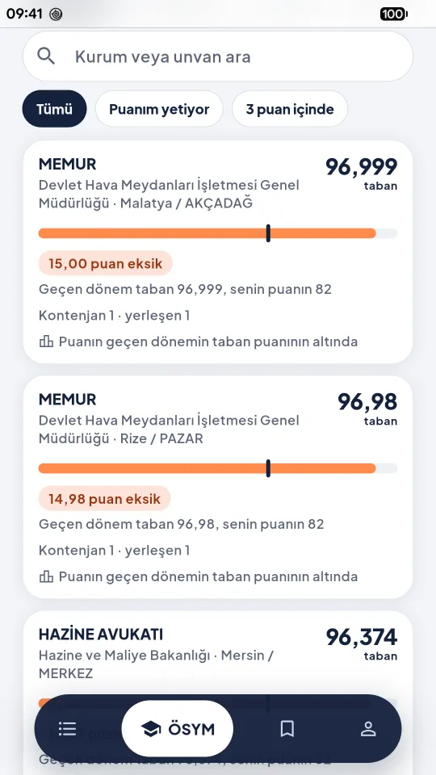
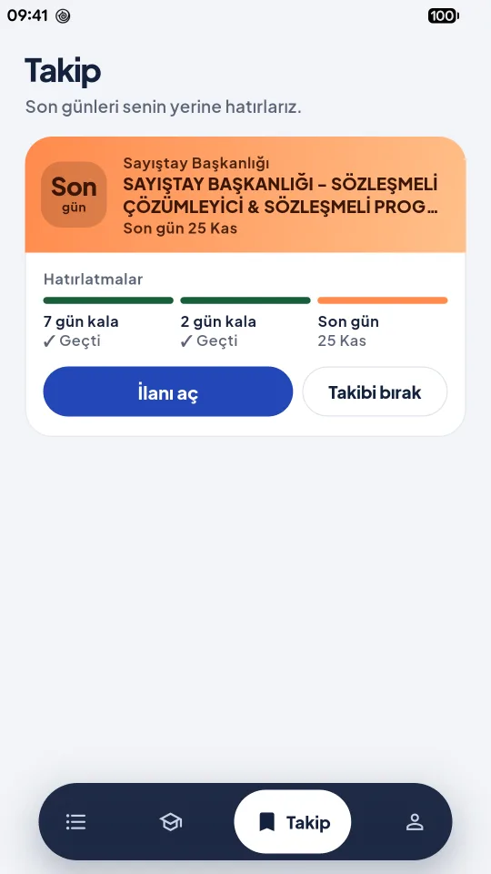
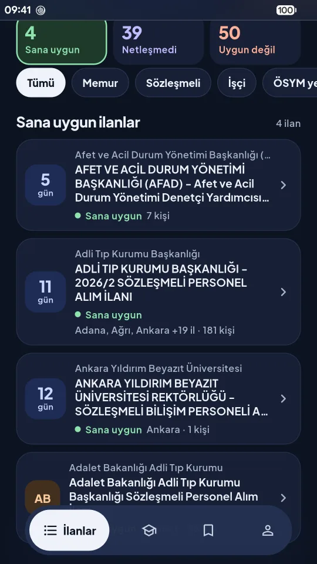

KPSS · Kariyer Kapısı · ilan.gov.tr · İŞKUR · ÖSYM
Kamu ilanları,
sana uygun olanlar önde.
Resmî kaynaklardaki ilanları tek yerde topluyor, şartlarını öğrenim, bölüm, KPSS puanı ve diğer bilgilerinle karşılaştırıyoruz. Hangi ilana başvurabileceğini ve nedenini görürsün.
- Hesapsız başla
- Reklam yok
- Bilgilerin şifreli

İlanlar yalnızca resmî kaynaklardan, günde üç kez
- Kariyer Kapısı
- ilan.gov.tr
- Kamu İlan
- İŞKUR
- ÖSYM
Nasıl çalışır?
İki dakikada başla,
gerisini biz okuyalım.
- 1
Profilini oluştur
Öğrenim düzeyin, bölümün, KPSS puanın ve çalışmak istediğin iller. Her soru ayrı adımda; hesap açman gerekmez.
- 2
Şartlar okunur
Her ilanın şartları (öğrenim, bölüm, puan, yaş, ikamet, sertifika…) senin bilgilerinle tek tek karşılaştırılır.
- 3
Uygun olana başvur
Her sonucun nedeni yanında. Başvuru her zaman ilanın resmî sayfasından yapılır.
Uygunluk
Her ilanda net bir sonuç.
İlanlar üç kutuda toplanır. Kutuya dokununca liste o duruma göre filtrelenir.
- Sana uygun
Bütün şartları karşılıyorsun.
- Netleşmedi
Bir bilgin eksik ya da bir şart otomatik okunamadı; ilanda hangisi olduğu yazar.
- Uygun değil
En az bir şartı karşılamıyorsun; hangisi olduğunu görürsün.

İlan detayı
Neden uygun olduğunu
tek bakışta gör.
- Kalan gün halkası. Son başvuruya yaklaştıkça dolar; son gün kapanır ve uyarı çıkar.
- Şartlar tek tek. Her kadronun şartları, hangisini karşıladığınla birlikte.
- Resmî ilana tek dokunuş. Başvuru her zaman kurumun kendi sayfasında.


ÖSYM
Geçen dönem taban puanlarıyla kendini kıyasla.
- Puanım yetiyor. Geçen dönemin taban puanı senin puanının altında kalan kadrolar.
- 3 puan içinde. Sınırda olan kadroları da kaçırma.
- Tercih dönemi. KPSS tercihleri açılınca tarihler ve dönemin ilanları burada.

Takip ve bildirim
Son günü kaçırma,
uygun ilanı ilk sen duy.
- Hatırlatmalar. Takip ettiğin ilan için son başvurudan 7 gün ve 2 gün önce, bir de son gün.
- Anında bildirim. Sana uygun yeni bir ilan çıkınca haber veririz.
- Koyu tema. Gece de gözü yormayan görünüm.


Gizlilik
Bilgilerin senin.
Hesapsız kullan
İlanlara bakmak ve uygunluğu görmek için hesap gerekmez.
Şifreli saklanır
Hesapsızda bilgilerin yalnızca cihazında, şifreli durur.
Reklam yok
Verilerin satılmaz, reklam kimliği kullanılmaz.
İstediğinde sil
Verilerini indir ya da hesabını tek dokunuşla sil. Nasıl?
Sık sorulanlar
Merak ettiklerin.
Bildirdim resmî bir uygulama mı?
Hayır. Bildirdim bağımsız bir uygulamadır; hiçbir kamu kurumuyla bağlantısı yoktur. İlanları kurumların resmî sitelerinden derler; her ilanda kaynağı ve son kontrol zamanı yazar.
Sonuçlar kesin mi?
Sonuçlar ön değerlendirmedir. Şartlar ilan metninden otomatik okunur; okunamayan ya da bilgini gerektiren şart "Netleşmedi" olarak gösterilir. Başvurmadan önce resmî ilan metnini mutlaka oku.
Hesap açmam gerekiyor mu?
Hayır. İlanlara bakmak ve uygunluğu görmek için hesap gerekmez. Bilgilerini cihazlar arasında taşımak istersen Google hesabınla giriş yapabilirsin.
Başvuruyu Bildirdim'den mi yapıyorum?
Hayır. "Resmî ilana git" düğmesi seni ilanın resmî sayfasına götürür; başvuru her zaman orada yapılır.
Premium'u nasıl iptal ederim?
Google Play → Ödemeler ve abonelikler → Abonelikler'den. Uygulamada Profil → Aboneliği yönet de aynı sayfayı açar. Hesabını silmek aboneliği iptal etmez.
iPhone'da var mı?
Şimdilik yalnızca Android'de. App Store sürümü hazırlanıyor.

Hangi kapının sana açık olduğunu
artık tahmin etme.
Ücretsiz indirGoogle Play
Görsellerdeki ilanlar gerçek ilanlardır; profil örnektir. Sonuçlar ön değerlendirmedir.